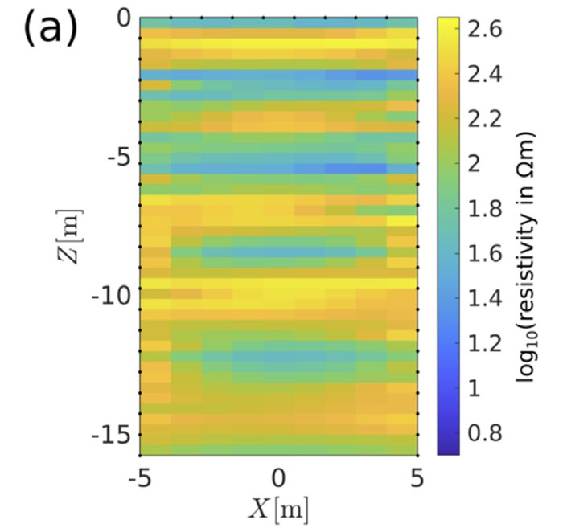
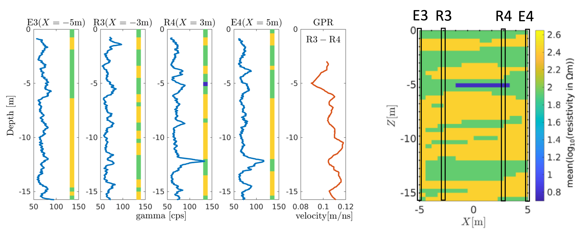
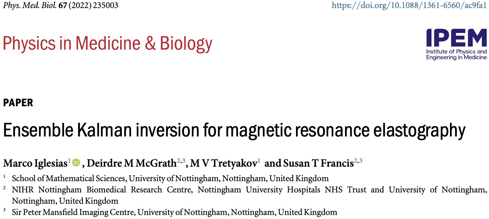

Computational Inverse Problems
From manufacturing and civil engineering
to geophysics and medical imaging.
School of Mathematical Sciences
Nottingham
University of Nottingham
- ~35,000 students in Nottingham, ~5,000 in Malaysia ~8,000 in China
- Top 100 2026 QS World University Rankings
- University Park Campus, one of the UK’s most attractive university campuses.
School of Mathematical Sciences
- ~ 80 academic staff.
- Annual intake of approximately 250-300 Undergraduates
Research Sections
Applied Mathematics
Pure Mathematics
Statistics and Probability
Mathematical Physics
Mathematics Education
Outline
Motivation
PDE-constrained Inverse Problems
Aim: Infer unknown parameters in PDE(s) given measurements of the solution of the PDE(s).
Forward Problem
Given \(\style{color:#d1002d}{\kappa(x)}\), \(\style{color:#d1002d}{f(x) }\) and \(\style{color:#d1002d}{p_0}\), find \(\style{color:blue}{p(x)}\) such that \[ \begin{aligned} - \nabla \!\cdot\! \big(\style{color:#d1002d}{\kappa(x)}\color{black}{\nabla} \style{color:blue}{p(x)} \big)&= \style{color:#d1002d}{f(x) } && x\in \Omega, \\ \style{color:blue}{p(x)} &= \style{color:#d1002d}{p_0} &&x\in \partial\Omega . \end{aligned} \]
Inverse Problem
Given \(\style{color:blue}{p(x)}\), find \(\style{color:#d1002d}{\kappa(x)}\), \(\style{color:#d1002d}{f(x) }\) and \(\style{color:#d1002d}{p_0}\) such that \[ \begin{aligned} - \nabla \!\cdot\! \big(\style{color:#d1002d}{\kappa(x)}\nabla \style{color:blue}{p(x)} \big)&= \style{color:#d1002d}{f(x) } && x\in \Omega, \\ \style{color:blue}{p(x)} &= \style{color:#d1002d}{p_0} &&x\in \partial\Omega . \end{aligned} \]
Overarching Applications of Inverse Problems:
Model calibration e.g. \(\style{color:#d1002d}{\kappa(x)}\), may be partially known (cannot be measured directly) or subject to uncertainty.
Tomography: inference of physical properties e.g.\(\style{color:#d1002d}{\kappa(x)}\)
Application Examples
Inversion Framework
General framework
Forward Problem (FP):
\[ \left\{ \begin{aligned} \textit{Model Equations (MEs):} &\quad \mathcal{M}(\style{color:#d1002d}{u},\style{color:blue}{p}) = 0 \\ \textit{Prediction of QoI:} &\quad \style{color:blue}{d} = \mathcal{H}(\style{color:blue}{p}) \end{aligned} \right. \] Forward Map: \(\style{color:#d1002d}{u}\xrightarrow{\;\;\mathcal{F}\;\;} \style{color:blue}{d}=\mathcal{F}(\style{color:#d1002d}{u})\)
Inverse Problem (IP):
Find \(\style{color:#d1002d}{u^{\dagger}}\) (the truth) given measurements, \(\color{#0044cc}{d^{\eta}}\) of \(d^{\dagger}=\mathcal{F}(\style{color:#d1002d}{u^{\dagger}})\).
Common (modelling) assumption: \[ \begin{align*} \style{color:blue}{d^{\eta}}&=\overbrace{\mathcal{F}(\style{color:#d1002d}{u^{\dagger}})}^{d^{\dagger}}+\eta,\qquad \eta: measurement~noise \end{align*} \]
Classical approaches
Least-squares: \[ u^{\eta}=\operatorname*{arg\,min}_{u\in U}~~\overbrace{ \left\lVert \style{color:blue}{d^{\eta}}-\mathcal{F}(\style{color:#d1002d}{u})\right\rVert^2}^{data~misfit} \]
Ill-posedness
Addressing stability: Regularisation
- Regularise then Optimise e.g. Tikhonov
\[u^{\eta}=\operatorname*{arg\,min}_{u\in U}~~\overbrace{ \left\lVert \style{color:blue}{d^{\eta}}-\mathcal{F}(\style{color:#d1002d}{u})\right\rVert^2}^{data~misfit}+\overbrace{\alpha\left\lVert \style{color:#d1002d}{u}\right\rVert_{\mathcal{R}}^2}^{regularisation}\]
Regurlise within the optimiser:
- Iterarively-regularised Gauss-Newton
- Landweber iteration
- regularising Levenberg-Marquardt
Limitations of Regularisation:
Does not address uniqueness
Does not quantify uncertainty
Requires derivative \(D\mathcal{F}\) (and its adjoint \(D\mathcal{F}^*\))
Not straightforward to incorporate discontinuities of \(\style{color:#d1002d}{u(x)}\)
Quantifying Uncertainty: The Bayesian Approach
Put a prior on \(\style{color:#d1002d}{u}\): \(\mathbb{P}(\style{color:#d1002d}{u})\).
Find the posterior
\[ \mathbb{P}(\style{color:#d1002d}{u}\vert \style{color:blue}{d^{\eta}})\propto \overbrace{\mathbb{P}(\style{color:#d1002d}{u})}^{prior}\overbrace{\mathbb{P}(\style{color:blue}{d^{\eta}}\vert \style{color:#d1002d}{u})}^{likelihood} \]
Challenges:
In general \(\mathbb{P}(\style{color:#d1002d}{u}\vert \style{color:blue}{d^{\eta}})\) does not admit closed-form solution
Sampling of \(\mathbb{P}(\style{color:#d1002d}{u}\vert \style{color:blue}{d^{\eta}})\) (e.g. via MCMC) is computationally unfeasible.
- Recall \(\style{color:#d1002d}{u}\) is a function (i.e. high-dimensional after discretisation).
How to incorporate discontinuities of \(\style{color:#d1002d}{u}\).
Ensemble Kalman Inversion (EKI)
Assumption \(\style{color:blue}{d^{\eta}}=\mathcal{F}(\style{color:#d1002d}{u^{\dagger}})+\eta,\qquad \eta\sim N(0,\Gamma)\)
Hence posterior: \[ \mathbb{P}(\style{color:#d1002d}{u}\vert \style{color:blue}{d^{\eta}})\propto \mathbb{P}(\style{color:#d1002d}{u})\exp\Big[-\frac{1}{2}\left\lVert\Gamma^{-1/2}(\style{color:blue}{d^{\eta}}-\mathcal{F}(\style{color:#d1002d}{u}))\right\rVert^2 \Big] \]
Main idea: Construct particle/sample approximations of internediate measures
\[\mathbb{P}(\style{color:#d1002d}{u})=\mathbb{P}_{0}(\style{color:#d1002d}{u})\mapsto \mathbb{P}_{1}(\style{color:#d1002d}{u})\mapsto\dots \mathbb{P}_{N}(\style{color:#d1002d}{u})=\mathbb{P}(\style{color:#d1002d}{u}\vert \style{color:blue}{d^{\eta}})\]
EKI Algorithm
Start with samples from the prior: \(\{u^{(j)}\}_{j=1}^{J}\), \(u^{(j)}\sim \mathbb{P}(u)\)
For \(n=0,\dots, N\):
Compute \(\mathcal{F}^{(j)}:=\mathcal{F}(u^{(j)})\)
Compute \[ \displaystyle\mathcal{C}^{\mathcal{F}\mathcal{F}} = \frac{1}{J-1}\sum_{j=1}^J\big(\mathcal{F}^{(j)}- \bar{\mathcal{F}}\big)\otimes\big(\mathcal{F}^{(j)}-\bar{\mathcal{F}}\big)\qquad \displaystyle\mathcal{C}^{u\mathcal{F}} = \frac{1}{J-1}\sum_{j=1}^J\big(u^{(j)} - \bar{u}\big)\otimes\big(\mathcal{F}^{(j)}-\bar{\mathcal{F}}\big) \]
where \(\displaystyle\bar{\mathcal{F}} = \frac{1}{J}\sum_{j=1}^J \mathcal{F}^{(j)}\) and \(\displaystyle \bar{u} = \frac{1}{J}\sum_{j=1}^J u^{(j)}\);
Update each particles, at eah iteration:
\[ u^{(j)}\leftarrow u^{(j)}+C^{u\mathcal{F}}(C^{\mathcal{F}\mathcal{F}} +\alpha_{n}\Gamma )^{-1}(d^{\eta}+\sqrt{\alpha_n}\xi-\mathcal{F}(u^{(j)}))\] where \(\xi\sim N(0,\Gamma)\) and \(\alpha_{n}\) is a regularisation/tempering parameter.
- EKI is derivative/Jacobian free.
- EKI is a heuristic approximate method
- in general it does not provide samples of the exact posterior.
Informal Derivation of EKI
See [Iglesias and Yang, 2021]
Tempering: Build transitions between prior and posterior
\[\mathbb{P}(\style{color:#d1002d}{u})=\mathbb{P}_{0}(\style{color:#d1002d}{u})\mapsto \mathbb{P}_{1}(\style{color:#d1002d}{u})\mapsto\dots \mathbb{P}_{N}(\style{color:#d1002d}{u})=\mathbb{P}(\style{color:#d1002d}{u}\vert \style{color:blue}{d^{\eta}})\]
Define \[\mathbb{P}_{n}(\style{color:#d1002d}{u})\propto \mathbb{P}(\style{color:#d1002d}{u})\exp\Big[-\frac{\xi_{n}}{2}\left\lVert\Gamma^{-1/2}(\style{color:blue}{d^{\eta}}-\mathcal{F}(\style{color:#d1002d}{u}))\right\rVert^2 \Big]\] with \(0= \xi_{0}<\xi_{1}<\dots<\xi_{N+1}=1\). Then write recursively: \[\mathbb{P}_{n+1}(\style{color:#d1002d}{u})\propto \mathbb{P}_{n}(\style{color:#d1002d}{u})\exp\Big[-\frac{1}{2}\left\lVert(\alpha_{n}\Gamma)^{-1/2}(\style{color:blue}{d^{\eta}}-\mathcal{F}(\style{color:#d1002d}{u}))\right\rVert^2 \Big]\] where \(\alpha_{n}=(\xi_{n+1}-\xi_{n})^{-1}\)
Linearise \(\mathcal{F}(\style{color:#d1002d}{u})\) around the mean of \(\mathbb{P}_{n}(\style{color:#d1002d}{u})\).
\[\mathbb{P}_{n+1}(\style{color:#d1002d}{u})\propto \mathbb{P}_{n}(\style{color:#d1002d}{u})\exp\Big[-\frac{1}{2}\left\lVert(\alpha_{n}\Gamma)^{-1/2}(\style{color:blue}{d^{\eta}}-\mathcal{F}(m_{n})-D\mathcal{F}(m_{n})(\style{color:#d1002d}{u}-m_n))\right\rVert^2 \Big]\]Gaussianise \(\mathbb{P}_{n}(\style{color:#d1002d}{u})\approx N(m_{n},C_{n})\) so the linearised problem is solved in closed form for the Gaussian \(\mathbb{P}_{n+1}(\style{color:#d1002d}{u})=N(m_{n+1}, C_{n+1})\)
\[ \begin{aligned} m_{n+1}=&m_{n}+C_{n}D\mathcal{F}_n^{*}(D\mathcal{F}_nC_{n}\,D\mathcal{F}_n^{*} +\alpha_{n}\Gamma )^{-1}(d^{\eta}-\mathcal{F}_n)\\ C_{n+1}=&C_{n}-C_{n}D\mathcal{F}_n^{*}(D\mathcal{F}_nC_{n}\,D\mathcal{F}_n^{*} +\alpha_{n}\Gamma )^{-1}D\mathcal{F}_nC_{n} \end{aligned} \] where \(\mathcal{F}_{n}=D\mathcal{F}(m_{n})\)Approximate derivatives with covariances
If \(u_{n}\sim N(m_{n},C_{n})\), then
\[
\begin{aligned}
\mathbb{E}[\mathcal{F}(u_{n})] \simeq &\mathcal{F}_n \\
\textrm {Cov}[\mathcal{F}(u_{n})] \simeq &D\mathcal{F}_nC_{n}D\mathcal{F}_n^{*},\\
\textrm {Cov}[u_{n},\mathcal{F}(u_{n})] \simeq & C_{n}D\mathcal{F}_n^{*}.
\end{aligned}
\]
Use sample approximations of expectations/covariances
\[\mathbb{P}_{n}(u_n)\simeq \mathbb{P}_{n}^{J}(u_n):=\frac{1}{J}\sum_{j=1}^{J}\delta_{u_{n}^{(j)}},\qquad u_{n}^{(j)}\sim\mathbb{P}_{n}(u_n)=N(m_{n},\mathcal{C}_{n})\] \[u_{n+1}^{(j)}=u_{n}^{(j)}+C_{n}^{u\mathcal{F}}(C_{n}^{\mathcal{F}\mathcal{F}} +\alpha_{n}\Gamma )^{-1}(d^{\eta}+\sqrt{\alpha_n}\xi_{n}^{(j)}-\mathcal{F}(u_{n}^{(j)}))\] where \(\xi_{n}^{(j)}\sim N(0,I)\) and \(C_{n}^{u\mathcal{F}}\) and \(C_{n}^{\mathcal{F}\mathcal{F}}\) are the sample approximations of \(\style{color:#d1002d}{\textrm {Cov}[u_{n},\mathcal{F}(u_{n})]}\) and \(\style{color:#d1002d}{\textrm {Cov}[\mathcal{F}(u_{n})]}\), respectivelyEKI history
Oceanography and Meteorology:
- Ensemble Kalman Filter [Burgers et al., 1998; Evensen, 1994]
(Oil) Reservoir applications: EnKF for parameter estimation. [Gu and Oliver, 2007; Nævdal et al., 2002]
Adapted EnKF as an iterative solver for PDE-constrained Inverse Problems = EKI [Iglesias et al., 2013]
EKI as an iterative regulariser: [Iglesias, 2016]
EKI as Gaussian approximation within a tempering scheme [Iglesias et al., 2018a; Iglesias and Yang, 2021]
EKI as a system of SDEs [Schillings and Stuart, 2018]
mean-field perspective of EKI [Calvello et al., 2025]
Parameterisation for Anomaly Characterisation
Inferring Discontinuous Properties
- Recall Forward Map: \(\style{color:#d1002d}{u}\xrightarrow{\;\;\mathcal{F}\;\;} \style{color:blue}{d}=\mathcal{F}(\style{color:#d1002d}{u})\)
- For \(\style{color:#d1002d}{u}\) discontinuous (or piecewise-continuous), how to define \(\mathbb{P}(\style{color:#d1002d}{u})\)?

{kind=link}
{kind=link}
{kind=link}
{kind=link}
{kind=link}
{kind=link}
{kind=link}
{kind=link}
{kind=link}
{kind=link}
{kind=link}
Level-set random field parameterisation
Example in 2D.
Unknown physical property \(\kappa(x)=\left\{\begin{array}{cc} \kappa_1(x)&\textrm{if}~x\in \Omega_{A},\\ \kappa_2(x)&\textrm{if}~x\notin \Omega_{A}.\end{array}\right.\)
\(\Omega_{A}\): Unknown anomalous region = [shape optiisation].{alert].
- Level-set parameterisation:
- Introduce an artificial level-set (LS) function \(L(x)\).
- Anomalous:
- \(\Omega_{A}=\{x\in \mathbb{R}^{2}\vert \,\,\style{color:#d1002d}{L(x)}>\lambda\}\)
\[ \kappa(x)=\left\{\begin{array}{cc} \style{color:#d1002d}{\kappa_1(x)}&\textrm{if}~\style{color:#d1002d}{L(x)}>\lambda,\\ \style{color:#d1002d}{\kappa_2(x)}&\textrm{if}~\style{color:#d1002d}{L(x)}\leq \lambda.\end{array}\right. \]
\[\big(L, \kappa_1,\kappa_2\big)\mapsto \kappa\] \[\mathcal{P}(L,\kappa_1,\kappa_2)=\kappa\]
- Non-anomalous:
- \(D\setminus A_{L}^{\lambda}.\)
{kind=link}
{kind=link}
{kind=link}
Bayesian level-set inversion [Iglesias et al., 2016]:
Instead of inferring \(u(x)=\kappa(x)\), infer \(u(x)=(L(x), \kappa_{1}(x),\kappa_{2}(x))\), i.e.
Prior \(\mathbb{P}(u)=\mathbb{P}(L)\mathbb{P}(\kappa_{1})\mathbb{P}(\kappa_{2})\)
Compute/approximate posterior: \(\mathbb{P}(d^{\eta}\vert u)\)
Push forward posterior \(\mathcal{P}_\#\mathbb{P}(d^{\eta}\vert u)\).
Gaussian Random Fields (GRFs)
\(L(x)\sim N(m, \mathcal{C})\)
Whittle-Matern GRF (see details).
Autocorrelation function: \[ ACF(x) = \sigma^2\frac{1}{2^{\nu-1}\Gamma(\nu)} \left\lVert\frac{x}{L}\right\rVert^\nu K_\nu \Big(\left\lVert\frac{x}{L}\right\rVert\Big). \] \(\nu\) (smoothness); \(L\) (intrinsic length-scale); \(\sigma\) (amplitude scale).
{kind=link}
{kind=link}
Hierarchical Bayesian level-set inversion [Dunlop et al., 2017]: Infer hyperparameters of random fields:
Application Examples
Composite Manufacturing [Iglesias et al., 2025].
Built Environment [Iglesias et al., 2024]
Medical Imaging [Iglesias et al., 2022]
Future Work and Opportunities for Collaboration
Surrogate modelling via Deep Learning (Neural Operators):
build a surrogate \(\mathcal{F}_s(u) \approx \mathcal{F}(u)\) to accelerate forward evaluations [Iglesias et al., 2025].- Composites: active structural control
- Geophysics: early warning systems
- Medical imaging: predictions within clinical time-scales
- Thermal bridges: rapid monitoring of thermal performance
- Composites: active structural control
Alternative Bayesian approaches (e.g., MCMC) when a full posterior characterisation is required, particularly under data scarcity.
New or existing applications where EKI could provide efficient parameter estimation and uncertainty quantification.
- Geometric constraints
Thank you
Questions?
Scan for slides
{kind=link}
Appendix
Resin Transfer Moulding (RTM)
RTM: context
Manufacturing composite materials
Uses of composite materials: Aerospace, automotive and marine industries.
Benefits: High-performance, lightweight, flexibility to accommodate complex designs
Manufacturing Involves: A robotic system lays down fibre tapes into a tool.
{kind=link}
RTM: Process
{kind=link}
Defects in RTM
{kind=link}
{kind=link}
Inverse Problem in RTM
Objective: Infer physical properties of the reinforcement given pressure measurements during resin injection.
Application: Active control and Non-destructive Evaluation (NDE)
Resin Injection Model
Forward Problem:
Find \((\style{color:blue}{p,\Upsilon})\) given \(\style{color:#d1002d}{u}=\style{color:#d1002d}{(K,\phi)}\).
Darcy flow: \[ - \nabla \cdot \Big[ \frac{ \style{color:#d1002d}{K(x)}}{\mu} \nabla \style{color:blue}{p(x,t)} \Big] = 0,\quad \textrm{in}~ \Omega(t) \nonumber \]
Moving front: \(x\in \Upsilon(t)\):
\[ \frac{d \style{color:blue}{\Upsilon(t)}}{dt}= - \frac{\style{color:#d1002d}{K(x)}}{\style{color:#d1002d}{\phi(x)} \mu} \nabla \style{color:blue}{p(x,t)} \cdot \mathbf{n}(x,t) \nonumber \]
{kind=link}
Inverse Problem
Find \(\style{color:#d1002d}{(K(x),\phi(x))}\) given measurements of \(\style{color:blue}{p(x_{1}),\dots,p(x_{M})}\).
Goal 1: Characterisation of material properties (with uncertainty)
{kind=link}
Goal 2: Calibrated Model (for active control)
Needs deep learning surrogate [Iglesias et al., 2025]

Nottingham Joint Work:
School of Mathematical Sciences (SoMS) & Composites Group (CG)
👥 Collaborators
- Michael Causon (SoMS)
- Andreas Endruweit (CG)
- Mikhail Matveev (CG)
- Michael Tretyakov (SoMS)
{kind=link}
[Causon et al., 2024; Iglesias et al., 2025; Matveev et al., 2021]
{kind=link}
{kind=link}
{kind=link}
Electrical Resistivity Tomography (ERT)
Context and Applications
ERT is a non-invasive geophysical imaging method that reconstructs subsurface electrical resistivity from surface or borehole electrode measurements.
Resistivity variations reflect soil moisture, porosity, clay content, fractures, and groundwater flow.
{kind=link}
UK applications:
Landslides: monitoring slope stability, detecting slip surfaces, and tracking moisture infiltration in vulnerable areas (e.g., railway cuttings, coastal cliffs).
Flood defences: assessing the integrity of embankments and levees, identifying internal erosion, seepage pathways, and zones of weakness.
Other applications:
- Groundwater exploration and contamination mapping
- Infrastructure and foundation assessment
- Archaeology and environmental monitoring
- Carbon storage and geothermal reservoir monitoring
- Groundwater exploration and contamination mapping
ERT: Forward and Inverse Problem
Forward Problem
Given \(\style{color:#d1002d}{\kappa(x)}\) find \(\style{color:blue}{V(x)}\) \[\nabla \cdot \style{color:#d1002d}{\kappa(x)} \color{black}{\nabla} \style{color:blue}{V(x)}\color{black}{=}I(x_{s^{+}},x_{s^{-}})\]
- \(\style{color:#d1002d}{\kappa(x)}\): electric conductivity
- \(\style{color:blue}{V(x)}\): electrical potential
Inverse Problem
Find \(\style{color:#d1002d}{\kappa(x)}\) given measurements of \(\style{color:blue}{V(x_{r})-V(x_{0})}\).
Goals
Goal 1: Infer subsurface stratigraphy and lithological under uncertainty
{kind=link}
{kind=link}
{kind=link}
Goal 2: Anomaly Detection/Characterisation
{kind=link}
Joint Work:
SoMS (Nottigham), British Geological Survey (BGS), UK Centre for Ecology and Hydrology, Lancaster University
👥 Collaborators
- Andy Binley (Lancaster University)
- Michael Tso (UK Centre for Ecology and Hydrology)
- Oliver Kuras (British Geological Survey)
- Paul Wilkinson (British Geological Survey)
{kind=link}
{kind=link}
{kind=link}
EKI for ERT
Toy model (Synthetic data)
\[ \kappa(x)=\left\{\begin{array}{cc} \style{color:#d1002d}{\kappa_{1}}&\textrm{if}~L(x)>1,\\ \style{color:#d1002d}{\kappa_2}&\textrm{if}~L(x)\leq 1.\end{array}\right. \]
Prior:
\[\mathbb{P}(\kappa_{1},\kappa_{2},L)=\mathbb{P}(\kappa_{1})\mathbb{P}(\kappa_{2})N(0,L)\]
\[ \kappa^{(j)}(x)=\left\{\begin{array}{cc} \style{color:#d1002d}{\kappa_{1}}^{(j)}&\textrm{if}~L^{(j)}(x)>1,\\ \style{color:#d1002d}{\kappa_2}^{(j)}&\textrm{if}~L^{(j)}(x)\leq 1.\end{array}\right. \]
Zone 1 prob: \[\mathbb{P}(L(x)>1)\approx \frac{1}{J}\sum_{j=1}^{J}\mathbb{I}_{L^{(j)}(x)>1}\]
Posterior approx from EKI: \[\big\{k_{1}^{(j)},k_{2}^{(j)},L^{(j)}\big\}_{j=1}^{J}\sim \mathbb{P}(d^{\eta}\vert \kappa_{1},\kappa_{2},L)\]
{kind=link}
EKI for ERT
Extension to 3 zones with real data
{kind=link}
{kind=link}
Identify hillslope hydrostratigraphy to improve conceptualization of runoff processes in the karst catchment.
2-D ERT profile with 48 electrodes, spaced ~5 m apart; electrode positions surveyed.
Dipole–dipole configuration with spacings of 1–3 electrodes, up to 11 levels.
Reciprocal measurements collected for error analysis (1569 measurements).
EKI resistivity maps better capture weathered features and soil infills typical of karst systems, improving geological interpretation.
High-resistivity zone agrees with a flat, slightly dipping mudstone layer reported in geological maps (Cheng et al., 2019).
{kind=link}


Thermal Characterisation of Buildings’ walls
Aim and Context
Aim: Predict the thermal performance of (existing) buildings’ walls in the presence of unknown thermal bridge effects.
Context (United Kingdom)
UK decarbonisation policy legislates an 80% reduction of its 1990 greenhouse gas emissions by 2050.
45% of all carbon emissions can be attributed to buildings.
60% of those emissions are associated space heating in domestic buildings.
85% of existing building stock will still be standing by 2050.
External walls comprise approximately 40% of heat loss/gain through the building envelope
Thermal Bridges
- 3D heat transfer arising from heterogeneities and/or discontinuities in the thermophysical composition of the building fabric (e.g. from material defects/degradation)
Wall’s thermal characterisation
Forward and Inverse Problem
Forward Problem
Given \(\style{color:#d1002d}{u(x)=(c(x),k(x),R_{I},R_{E})}\) find \(\style{color:blue}{T(x, t)}\): \[ \style{color:#d1002d}{c(x)}\frac{\partial \style{color:blue}{T(x, t)}}{\partial t} =\nabla \cdot \style{color:#d1002d}{k(x)} \nabla \style{color:blue}{T(x, t)} \] Convective BCs on the internal/external surfaces \(\mathcal{S}_{\alpha},~(\alpha=I,E)\)
\[ \begin{align*} - \style{color:#d1002d}{k(x)} \nabla T(x, t)\cdot\mathbf{n}(x)=\style{color:#d1002d}{R_{\alpha}^{-1}}[T(x,t)- \color{green}{T_{\alpha}(t)}] \end{align*} \]
Inverse Problem
Find \(\style{color:#d1002d}{u(x)=(c(x),k(x),R_{I},R_{E})}\) given \(\style{color:blue}{T(x,t)\big\vert_{\mathcal{S}_{\alpha}}}\) and \(\style{color:blue}{Q_{\alpha}(x,t)\equiv -k(x)\nabla T(x,t)\big\vert_{\mathcal{S}_{\alpha}}}\).
{kind=link}
{kind=link}
Nottingham Joint Work:
School of Mathematical Sciences (SoMS) & Architecture and built environment (ABE)
👥 Collaborators
- Yupeng Wu (ABE)
- Christopher Wood (ABE)
{kind=link}
[De Simon et al., 2018; Iglesias et al., 2024, 2018b, 2018c]
{kind=link}
Magnetic Resonance Elastography
Aim: Remote palpation by shear waves, i.e. tomographic quantification of shear modulus of biological tissue.
Induce excitation at a given frequency (e.g. 50Hz).
Measure (complex) displacements \(\style{color:blue}{\mathbf u(\mathbf x)}\) via MRI (Motion encoding gradient).
Invert displacements to find shear modulus \(\style{color:#d1002d}{G(\mathbf x)}\): viscoelastic properties
{kind=link}
{kind=link}
Forward/Inverse Problem in MRE
Forward Model
Time-harmonic isotropic linear viscoelastic equations \[ \rho \omega^2 \style{color:blue}{\mathbf u} +\nabla \cdot \big[ \style{color:#d1002d}{G} (\nabla \style{color:blue}{\mathbf u} +(\nabla \style{color:blue}{\mathbf u})^{T})\big]+\nabla (\style{color:#d1002d}{\lambda} \nabla \cdot \style{color:blue}{\mathbf u})=\mathbf{0},\qquad \text{in}~ \Omega, \]
Known quantities: \(\omega\) (frequency) and \(\rho\approx 10^{3}\text{kg}/\text{m}^3\).
Unknown quantities: BCs, \(\style{color:#d1002d}{\lambda(\mathbf x)}\) and \(\style{color:#d1002d}{G(\mathbf x)}\)
Measured quantities (via MRI): \(\style{color:blue}{\mathbf u_{M}\equiv (\mathbf u(\mathbf x_{1}),\dots,\mathbf u(\mathbf x_{M}))}\)
Inverse Problem
Find the shear modulus \(\style{color:#d1002d}{G(\mathbf x)=G_{s}(\mathbf x)+iG_{l}(\mathbf x)}\) given measurements of \(\style{color:blue}{\mathbf u_{M}\equiv (\mathbf u(\mathbf x_{1}),\dots,\mathbf u(\mathbf x_{M}))}\).
\(\style{color:#d1002d}{G_{s}(\mathbf x)}\): storage modulus. \(\style{color:#d1002d}{G_{l}(\mathbf x)}\): loss modulus.
Characterisation of biological tissue
{kind=link}
{kind=link}
{kind=link}
{kind=link}
Nottingham Joint Work:
School of Mathematical Sciences (SoMS) & Sir Peter Mansfield Imaging Centre (SPMIC)
👥 Collaborators
- Susan Francis (SPMIC)
- Deirdre McGrath (SPMIC)
- Michael Tretyakov (SoMS)

{kind=link}